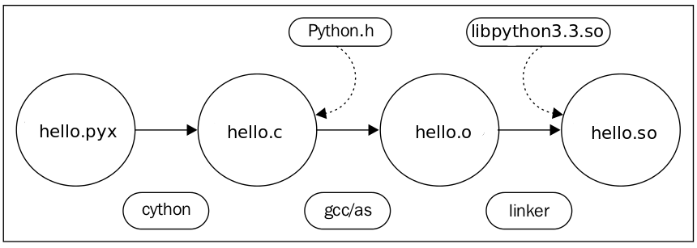
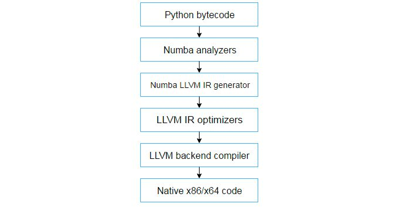
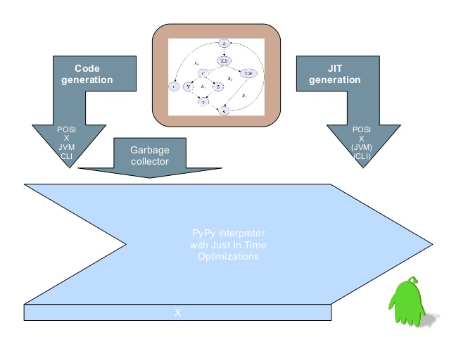
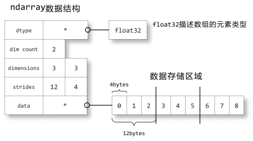

最近一直在做python工程化相关的工作，颇有心得，遂总结一下。
一是为了整理思绪，二是为了解放自己健忘的大脑。
原生的python通常都是由cpython实现，而cpython的运行效率，确实让人不敢恭维，比较好的解决方案有cython、numba、pypy等等
是目前我认为发展最好，最靠谱的一项Python加速解决方案。

使用cython编译过后的代码，通常会对原python代码有2倍以上的速度提升。cython的编译也很简单，只需要构建一个setup.py，然后执行：
python setup.py build_ext
numba也是我比较看好的，它的亮点在于使用装饰器的方式应用jit技术，例如下面的代码：
@jit
def run_xxx():
...可直接将run_xxx方法进行高效的c编译。
但在大多数应用场景下（尤其是采取了服务拆分或微服务的架构策略），这种功能反而让人有种鸡肋的感觉
只能说numba更适用于模型开发的场景，在模型应用和部署的环节，numba的作用很尴尬

pypy相对比较小众，这是由于它本身的限制条件较多，尤其是对python第三方包的支持上面更是非常局限。由于我在做python开发的过程中，经常需要限制版本，以及引入较多的第三方包，所以pypy就不在考虑的范围内了
曾经在网上看到有人发文，声称numpy是目前python下非常高效的一个模块，而numpy的“娘亲们”，甚至把自己夸上了天，说自己如何如何高效。而国内的一些伪专家们，也是盲目的“助纣为虐”，说什么如果你不太懂，请不要轻易去优化numpy云云，难道你自认为优化的算法能胜过numpy里内置的久经考验的算法？
真的是误人子弟！很多人在这里就被唬住了，代码分析到numpy的环节，就不敢往下走了。
我想说的是，对一切永远保持怀疑的精神才是真正的科学素养，是不是真的高性能，一切要用数据说话。
刚开始，我也被短暂的唬住了，毕竟numpy的底层也没接触过，但profiler分析的结果告诉我，问题就出在numpy里，结果发现在我的项目场景里，使用dict能完全替代numpy的所有操作，性能一下提高了很多，而numpy的高效在于ndarray

所以，采取什么数据结构要看应用场景，没有万能的高效数据结构
优化代码的过程中，因为我的以往成功“经验”，也导致走了不少弯路，最主要的，就是盲目使用排除法。使用排除法只能使用二分查找或快排的策略去组织代码，如果目标代码比较少还可以，事实上，在真实场景中往往有成百上千行目标代码。人工执行和实现O(logN)量级的操作，似乎是一种蛮干。
这里有几个度量工具顺便记录下：
https://github.com/benfred/py-spy
方便的生成CPU执行方法的火焰图
https://github.com/rkern/line_profiler
逐行代码分析，不要小看它的能力，它还可以指定要分析的方法和模块
在很多人的习惯性逻辑思维里，一个程序的性能，随着代码的优化，会是一条平滑的增长曲线。但实践表明，这个逻辑确实有问题。
通过不断对代码的优化，我发现，程序的性能到达一定阶段会发生“突变”，或者“阶跃”。上一次优化的执行时间几百毫秒，下一次优化后的执行时间竟然只有几十毫秒，说发生了“阶跃”一点都不夸张。
为什么会这样？
至少在我的朋友圈里，还没有人能给我令人信服的答案，我自认为比较可靠的理解是，现代操作系统在cpu指令的处理上，对cpu的任务分配还不是那么“流畅”。
哪位朋友有好的见解，欢迎批评指正！